关闭Windows更新 - T-PageCode Blogs
如何关闭Windows自动更新？
很多人都被Windows自动更新拖住，电脑一直提示重启并更新，结果重启后更新失败。
不仅费时间还打扰工作，我觉得挺烦人的。
那如何关闭Windows自动更新呢？
首先来个组策略禁用
警告：此方法对某些Windows不生效，如果不生效，请尝试使用服务关闭方法。
再次警告：只有Windows专业版或企业版等才可以，家庭版没有组策略。
首先按下键盘上的Windows徽标键和R键（注意要一起按）打开运行对话框。
然后输入：gpedit.msc
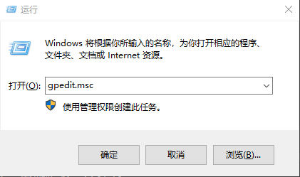
然后你会看到组策略编辑器：
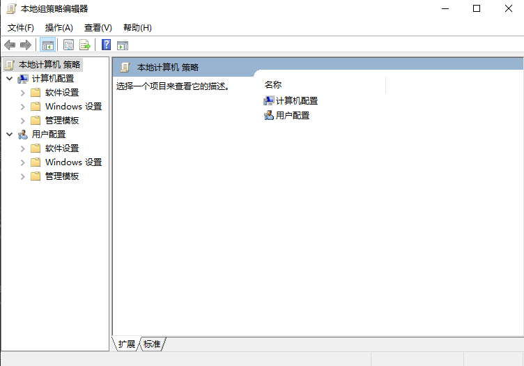
别看这个界面有点丑陋，还没有深色模式，但是它有着非常多的实用功能。
点击计算机配置，再次点击管理模板，然后点击Windows组件。
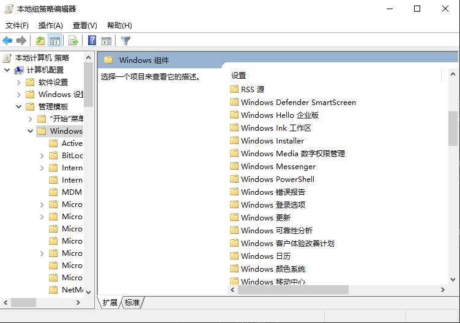
点击Windows更新，找到配置自动更新。
双击这个选项，会打开一个窗口。

打开后，点击已禁用。
点击确定，重启系统以保证设置生效（如果不想重启可以试试不重启）
然后打开设置。
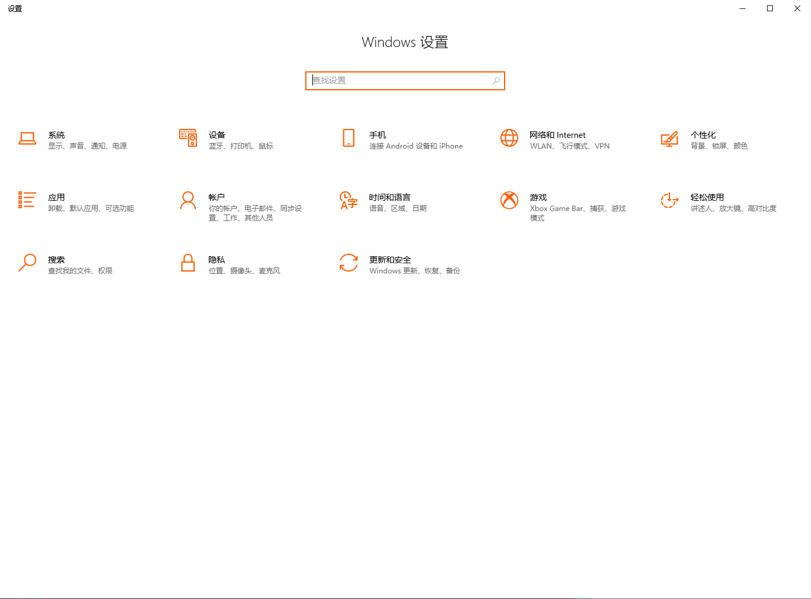
点击Windows更新或更新与安全，如果显示你的组织已关闭自动更新就成功了。
使用服务关闭方法
还是熟悉的运行，按下键盘上的Windows徽标键和R键打开运行对话框。
不过这次输入的不是gpedit.msc，而是services.msc。
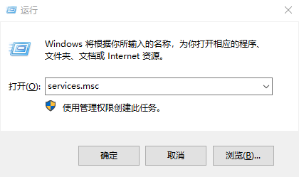
点击确定或者回车，就能打开服务窗口。
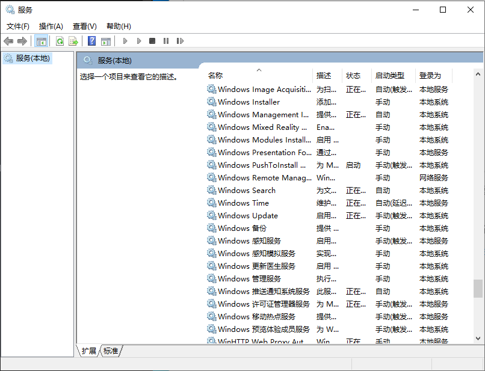
找到Windows Update或者Windows更新，双击这个选项。
注意：如果想要更深入的关闭，请到任务计划程序找到UpdateOrchestrator关闭。
然后你会看见Windows更新的服务设置窗口。
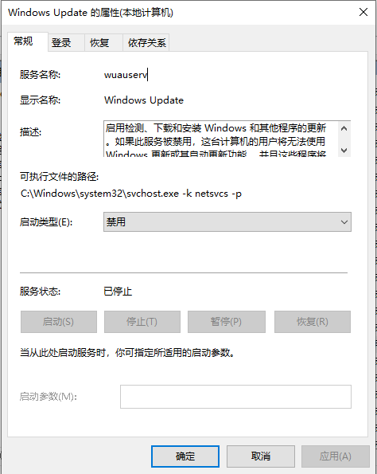
首先点击停止，停止Windows更新服务。
然后找到启动类型，点击下拉框，把启动类型改为禁用。
还没完呢，点击恢复选项卡。
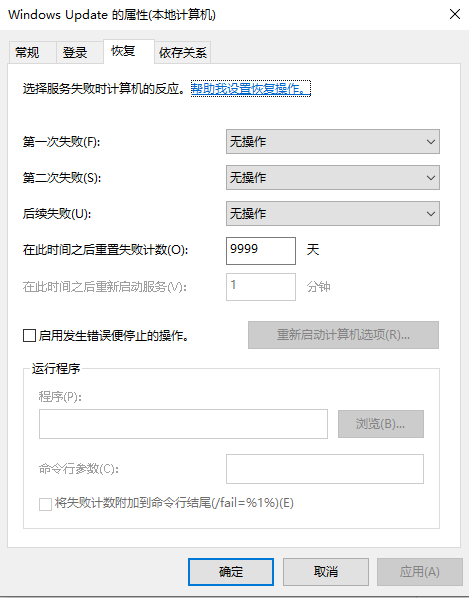
找到第一次失败、第二次失败和后续失败，点击下拉框，全都改为无操作。
然后找到在此时间之后重置失败计数，点击输入框，删除原本的内容。
然后在输入框内输入9999。
点击确定，再次打开设置：
点击Windows更新或更新与安全。
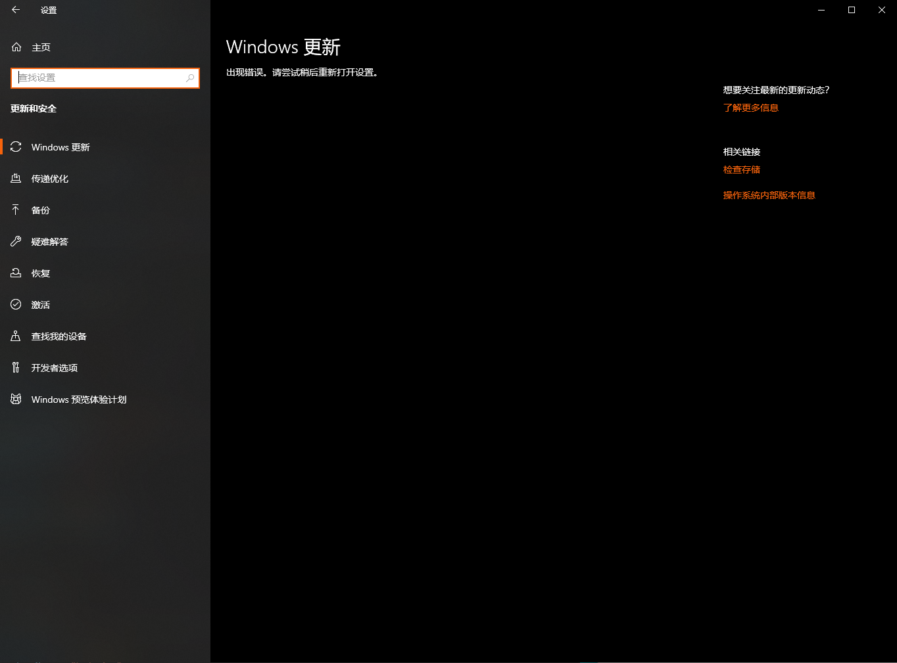
它可能会直接报错：出现错误。请尝试稍后打开设置。
为了再次验证，点击开始菜单：
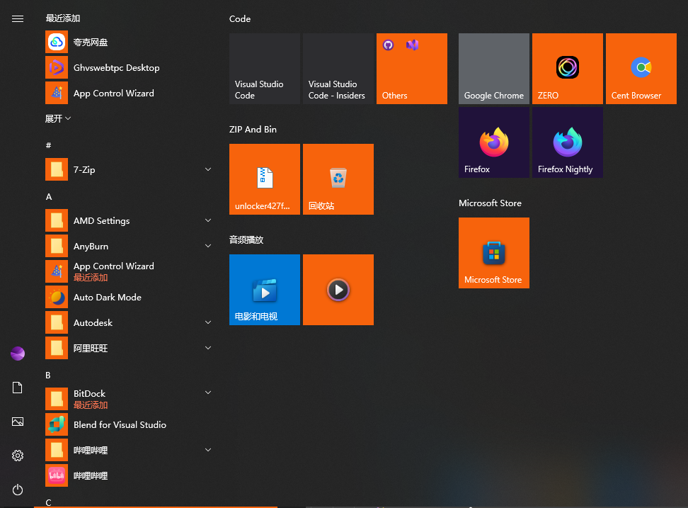
找到电源图标。
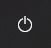
点击这个图标，如果没有了更新并重启和更新并关机就成功了。
但是服务可能会被修改，需要定时检查。
这时候，用电脑几天，如果更新没有再次出现，恭喜你，你成功了！
注意：Windows 7上的GWX.exe用这些手段是没有效果的，可以进PE删除GWX.exe。